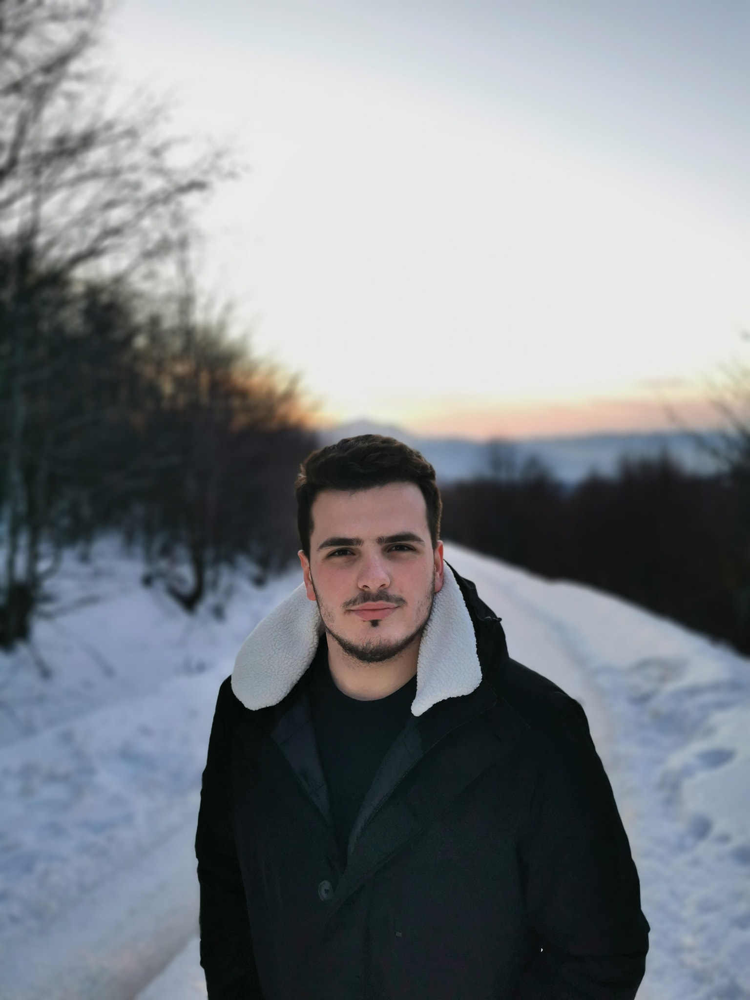

Profili im

Astrit Trstena, i lindur në vitin 2000 në Shkup, Maqedonia e Veriut.
Shkollën fillore e kam përfunduar në shkollen "Vasill Gllavinov"
Shkollën e mesme në SH.M.I."Medreseja Isa Beu-Shkup"
Aktualisht jam duke ndjekur studimet në
Univerzitetin Ballkanik në Shkup - Fakulteti "Inxhinieria Kompjuterike"
Punoj si ne kompanin Homax - Shkup
Punoj si shites ne kompanin ElektroitaliaGewiss - Shkup
Punoj si dizajnues në një firmë për marketing Bj.Print-Shkup.
Thenja e preferuar
"Dhe vdekja do te vdes, e pastaj do te mbetet vetem jeta"
Arsim Fazlija
Hobit e mia
- Te luaj futboll
- Leximi i librave me tema te ndryshme
- Ecja me familje
Kontakt
Xhon Kenedi 9/1-3
1000 Skopje
astrit.trstenaa@gmail.com
00389 71 792 676